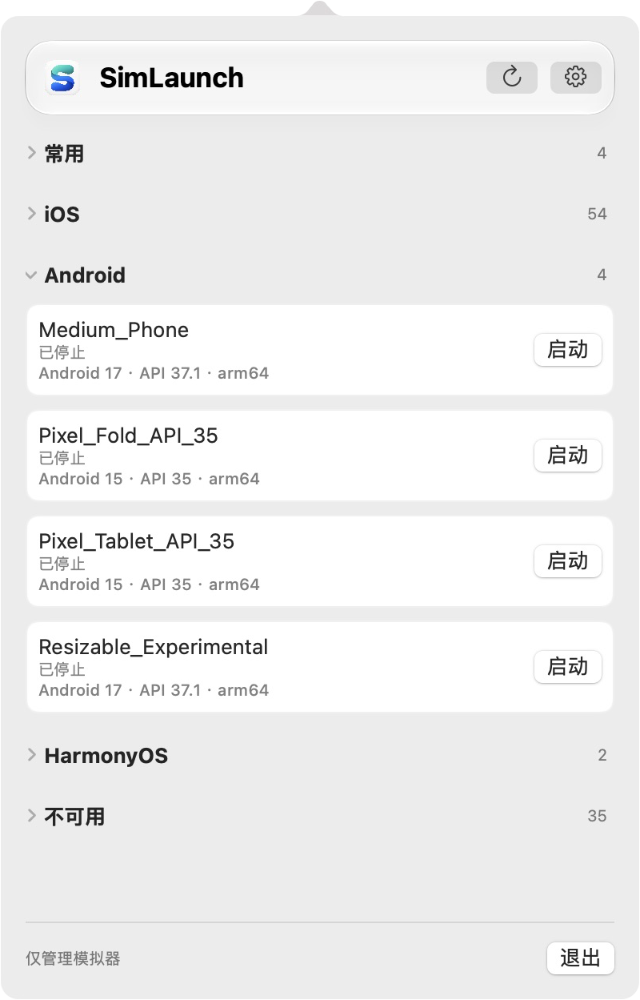
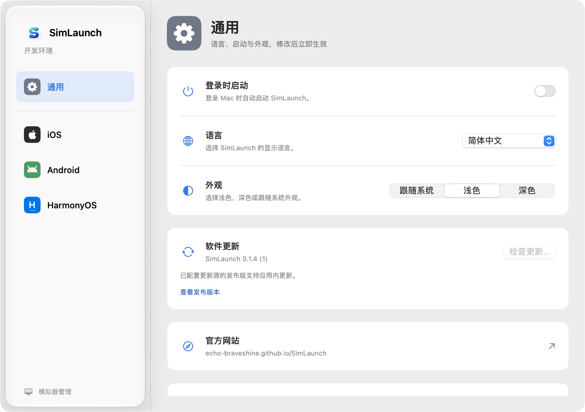

01 /
从菜单栏，直达设备。
查看三平台设备，启动或停止模拟器。常用设备显示在最上方，不可用设备独立归类。

少一点切换，多一点专注
不必为每一次启动打开一整套开发工具。
从设备列表开始，专注眼前的开发。
查看三平台设备，启动或停止模拟器。常用设备显示在最上方，不可用设备独立归类。
复制设备名称、定位设备目录，或冷启动 Android 与 HarmonyOS 设备。删除操作需再次确认。
自动发现或手动配置工具路径。中英文、深浅色外观与登录时启动，在同一个设置窗口完成。
直接看看，真实界面
截图来自实际运行的 SimLaunch。 切换语言与外观，可查看对应的真实应用界面。

像 macOS 本来就有的一样
使用 SwiftUI 构建，常驻菜单栏。在 macOS 26 及更新系统上，部分界面采用 Liquid Glass；较旧系统使用原生材质。
下一次开发，从这里开始
选择适合你的安装方式。
开发工具与系统镜像需自行准备。
前往 GitHub Releases，下载通用版 ZIP，解压并将 SimLaunch 移入“应用程序”。
查看最新发布支持 Apple Silicon 与 Intel 的通用构建# 添加安装源并安装
brew tap echo-braveshine/simlaunch https://github.com/Echo-BraveShine/SimLaunch.git
brew install --cask echo-braveshine/simlaunch/simlaunch需先发布包含 Cask 的版本。可用性及维护说明请查看仓库。
Homebrew 安装与升级说明开始之前
管理 iOS 设备需要完整 Xcode 和已安装的模拟器运行时；Android 需要 Android SDK 中的 emulator、adb 及已创建的 AVD；HarmonyOS 需要 DevEco Studio 及已创建的模拟器。SimLaunch 不包含这些工具。
目前专注于已有设备的查询、启动、停止与管理。创建虚拟设备和下载系统镜像，请使用对应平台的开发工具。
SimLaunch 是菜单栏应用，不常驻 Dock。启动后可使用设备主窗口，也可以点击屏幕顶部的 SimLaunch 图标管理设备或打开设置。
应用部署目标为 macOS 13 及以上，尚未在全部支持版本上完成实机验证。具体设备的可用性也取决于开发工具版本、系统镜像和电脑架构。